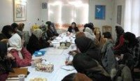

|
|
|
Browsing
Contact Us |
Campaigners |
Face to Face |
Tribune |
Interview |
News |
On the Web |
One Million |
Report
Farsi | Français | German | Italian | Spanish | العربية Also in this section
|
 Women’s Legal Rights Workshop for Campaign Members Ebadi: The Demands of the Campaign have Penetrated SocietyBy: Maryam Malek Saturday 16 February 2008 Translated by: Sussan Tahmasebi Change for Equality: The second in a series of workshops on women’s legal rights was held for Campaign members in the offices of the Organization for Human Rights Defenders. Thirty members of the Campaign in Tehran, representing the Mothers, Volunteers and Media Committees, participated in this workshop. Shirin Ebadi, who served as the trainer at this workshop, expressed satisfaction about the fact that "our society is moving toward greater enlightenment, and attributed this forward moving trend to increased awareness among women." While emphasizing that Islam like any other religion enjoys different interpretations, she explained that: "many believe that rulings within Islam have come about based on the social relations, of the time. Now that social relations have changed, the changing of laws constitutes a necessity, and the need for change does not mean that a particular religion is bad, or inadequate, rather it is an indication of its comprehensiveness, meaning, that it has the capacity to renew itself according to time and place." In response to a question posed by one of the participants on why the progression of the Campaign has been slow and how can activists within the Campaign work more effectively to introduce their efforts and demands to the public at large, Ebadi, expressed support for the positive developments brought about as a result of the Campaign. "All those who work for the Campaign, do so whole heartedly. I should let you know that the demands of the Campaign have penetrated deeply the various layers of society. What is achieved in a short span of time, can also be lost quickly. Serious social change takes time. As such you should not be unhappy if you have not achieved your results in a short time span. Did you know one another before the start of the Campaign? Did you work together before the start of the Campaign? These are all the miracles of the Campaign, I am not claiming that these are the results of the Campaign, rather I am claiming that these are the miracles of the Campaign," Ebadi claimed. In response to a question about polygamy, Ebadi pointed to the fact that polygamy has been banned in Morocco and has witnessed many legal obstacles in other countries. She went further to explain that: "even the Holy Koran while allowing for men to take up to 4 wives, explains that a man in such a case could never treat his wives equally and would not be able to observe justice, as such the reform of laws with the intent of ensuring equality is not in opposition to Islam. In these types of cases, we need to refer to the interpretations of Islam by Islamic scholars and jurists." During these discussions, Khadijeh Moghaddam, a member of the Mothers Committee, provided some explanations about the progress of the Campaign. She explained that: "it takes time to address cultural issues, which have a long history and tradition. As mentioned in the educational booklet of the Campaign, the change in laws will have a direct and positive impact on cultural norms and beliefs." She went further to claim that the Campaign is well known among educated sectors of society. Moghaddam continued by stating that: "the Campaign has for the first time [in the history of the Iranian women’s movement] employed the strategy of face-to-face education, and through this strategy it has connected with different layers and segments of society. As such, the slow progression of this Campaign in part can be attributed to lack of resources." The Organization of Human Rights Defenders holds workshops on women’s legal rights every 15 days. The first of these workshops were held on Thursday January 23, with 30 participants who are active within the Campaign. These workshops examine women’s rights in Iranian law and in Islam. Shirin Ebadi and Dr. Abdul-Fateh Soltani served as the trainers in the first workshop. |